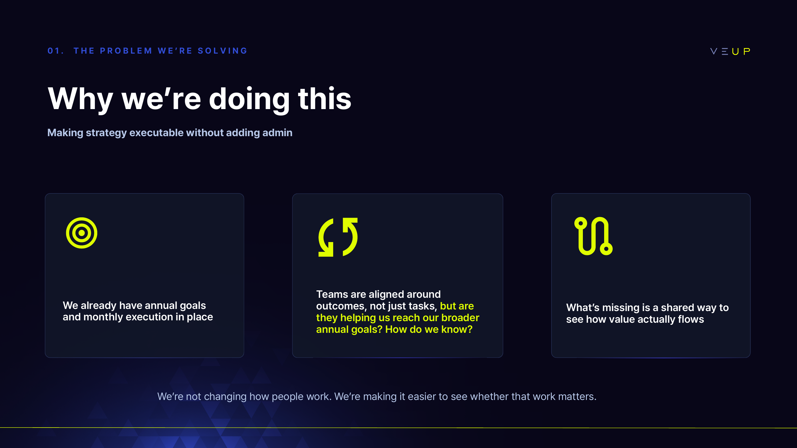
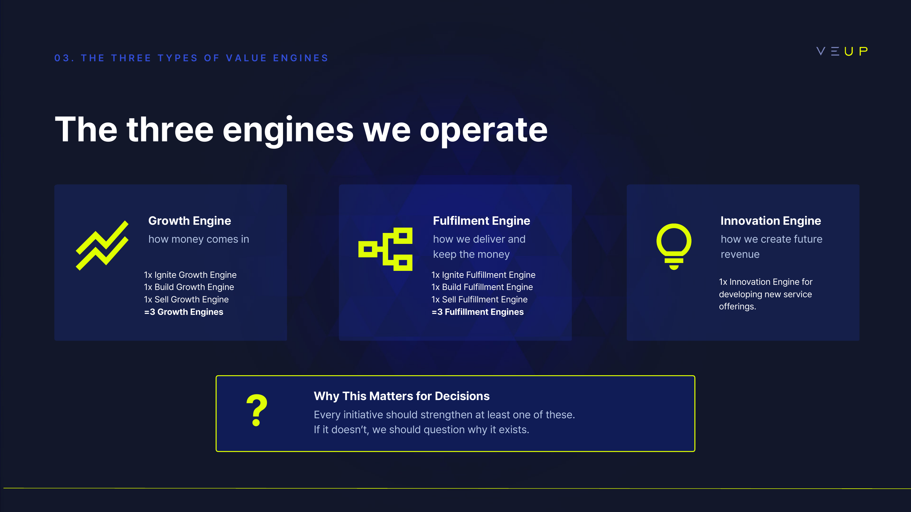
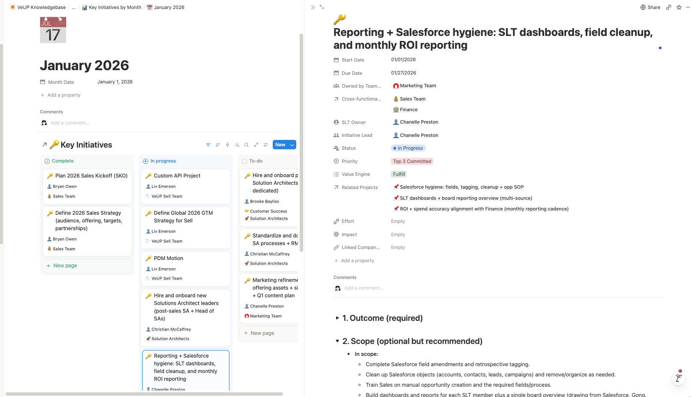
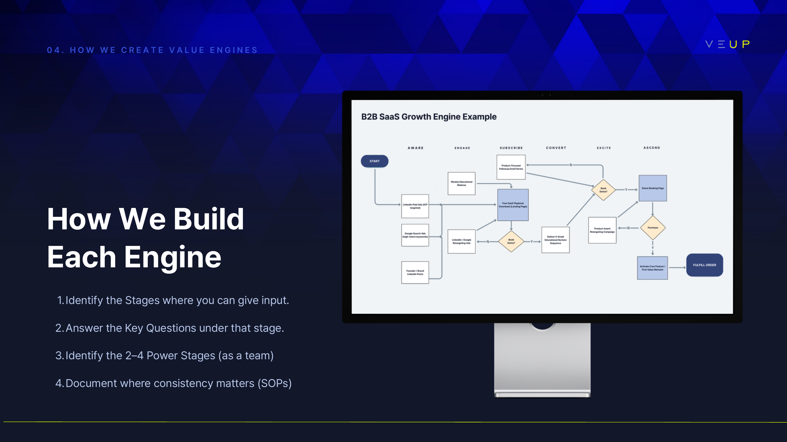

Turning fragmented work into a company operating system.
A connected model for strategy, ownership, knowledge and execution.
I partnered with the CEO and senior leadership to define how company goals translated into team priorities, initiatives and projects, then built the digital infrastructure that made that model usable day to day.
Work existed. The operating infrastructure didn't.
People were busy, but the work was difficult to connect to the bigger picture.
Information lived across private folders, presentations, documents, Slack conversations and individual memory. Priorities largely stayed at leadership level, while employees had to reconstruct context for themselves.
Daily work was not visibly connected to company goals.
Finding context often meant asking around and waiting across time zones.
Projects and dependencies lacked one shared view.
Duplicate files, outdated versions and repeated effort were common.
Built from experience, not a template.
I designed the operating model before I designed the workspace.
My approach drew on business-leadership study, experience running my own company, and principles from Lean, OKRs, EOS and Value Engines. I combined the parts that suited VeUP, then worked with leadership to turn them into a practical structure for decision-making and delivery.


One connected architecture. Different views for different needs.
The OS was built from interconnected databases rather than standalone pages.
A new team, person, initiative or date could be added once and appear automatically wherever it was relevant. Company-wide information stayed connected while each team saw a focused view of the same underlying system.

The system had to stop depending on me.
Adoption meant turning the model into shared management behaviour.
I trained leadership, established governance and created enough reusable guidance for teams to manage their own priorities, views and processes after rollout.
Leadership enablement
Around five workshop and training sessions helped leadership use the same language for value creation, priorities, ownership and execution.

“This is so well organised, thanks so much. I really appreciate the onboarding info and everything in Notion.”Feedback from a new starter.
From person-dependent work to shared company infrastructure.
The biggest shift was not simply speed. It was visibility.
People could find context, see ownership and check status without relying on repeated messages. Leadership gained a clearer line of sight from priorities to active work, while teams had a reusable structure that could scale without starting again each time.